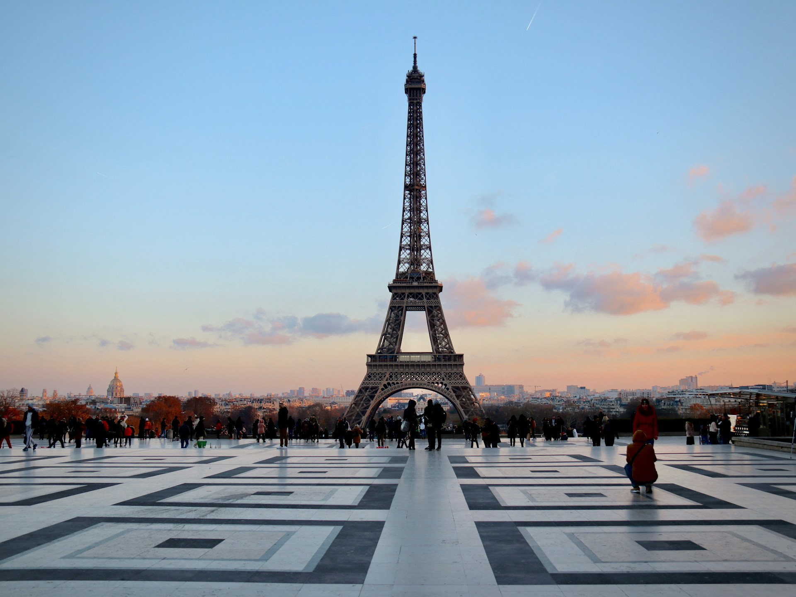

-

Barcelona
Barcelona, the lively capital of Catalonia, is a captivating blend of rich history and stunning architecture. Famous for Gaudí's masterpieces like the Sagrada Família and Park Güell, the city also features beautiful beaches and vibrant neighborhoods like the Gothic Quarter.
-
Hawaii
Hawaii is a tropical paradise with stunning beaches and lush landscapes, perfect for relaxation and adventure.
-
London
London, the bustling capital of England, is a city steeped in history and modernity. Iconic landmarks like the Tower of London, Buckingham Palace, and the British Museum sit alongside trendy neighborhoods and vibrant markets. With diverse cuisine, a rich arts scene, and endless entertainment options, London offers something for every traveler.
-
Miami
Miami is a vibrant city known for its stunning beaches, lively nightlife, and diverse culture. Famous for its Art Deco architecture and multicultural neighborhoods, such as Little Havana, Miami offers delicious cuisine and year-round sunshine.
-
Munich
Munich, the capital of Bavaria, is famous for its rich history, beautiful architecture, and lively beer gardens. Home to the annual Oktoberfest, the city boasts stunning landmarks like the Marienplatz and Nymphenburg Palace. With a vibrant cultural scene and proximity to the Alps, Munich offers a perfect mix of tradition and modernity.
-

New York City
New York City, the bustling metropolis known as "The Big Apple," offers an unforgettable blend of iconic landmarks, diverse cultures, and vibrant neighborhoods. From Times Square and Central Park to world-class museums and Broadway shows, NYC is a hub of energy and creativity.
-

Paris
Paris, the enchanting capital of France, is renowned for its romantic ambiance, iconic landmarks, and rich artistic heritage. Home to the Eiffel Tower, Louvre Museum, and charming streets of Montmartre, Paris offers exquisite cuisine and vibrant café culture.
-
Sydney
Sydney, Australia’s sparkling harbor city, is famous for its stunning beaches, iconic Opera House, and vibrant lifestyle. With attractions like Bondi Beach and the Royal Botanic Garden, Sydney offers a perfect blend of nature and urban excitement. Its diverse food scene and outdoor activities make it a must-visit destination for travelers.
-
Tokyo
Tokyo, Japan’s bustling capital, is a captivating fusion of traditional culture and cutting-edge modernity. With historic temples, vibrant neighborhoods like Shibuya and Shinjuku, and world-class cuisine, Tokyo offers endless exploration.
-

Bali
Bali, the enchanting Indonesian island, is known for its stunning beaches, lush rice terraces, and vibrant culture. With a rich spiritual heritage, visitors can explore beautiful temples and enjoy wellness retreats. Bali’s warm hospitality, diverse cuisine, and breathtaking landscapes make it a perfect getaway for relaxation and adventure.